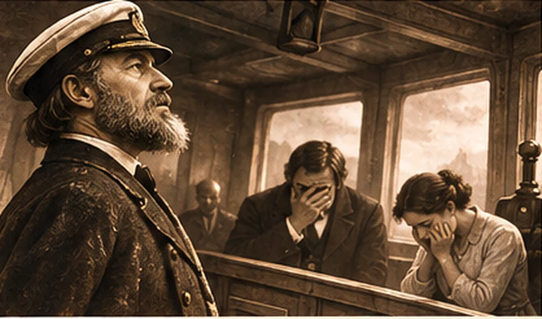
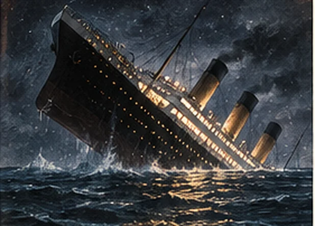
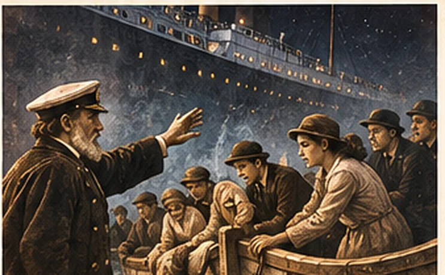
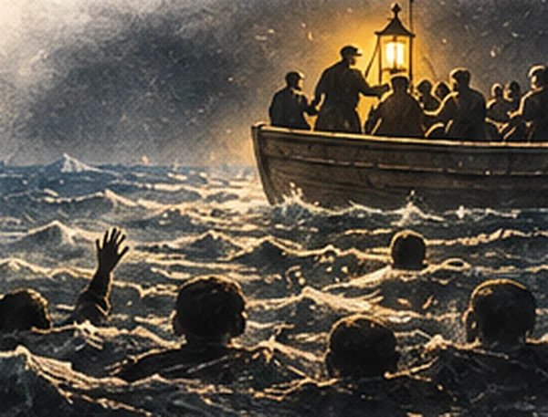

A great ship lies broken in an icy sea. Captain Adam and First Officer Eve have driven her into disaster. Passengers cling to floating wreckage and insist they can save themselves. But in the darkness a lifeboat returns—and its Commodore is searching for sinners.
What follows is a fictional Christian allegory, not the testimony of a Titanic survivor. I wrote it in 2021 using the catastrophe of a sinking liner to picture the Fall of humanity, our devotion to idols, the preaching of the gospel, repentance, and the saving work of Jesus Christ. There is some dark humour aboard this vessel. But there is also a serious question: What are you trusting to keep you afloat?
“For the preaching of the cross is to them that perish foolishness; but unto us which are saved it is the power of God.”
1 Corinthians 1:18 · KJVThe Night H.M.S. Humanity Met the Iceberg
The slithering iceberg had done its work.
H.M.S. Humanity, commanded by Captain Adam with First Officer Eve at his side, had steamed straight into the iceberg’s lies. The deceitful mountain of ice tore a murderous wound into the ship’s bow. Steel groaned; seawater rushed in. The mighty vessel, once thought secure, had begun to die.
Commodore Christ approached the bridge, perfectly composed and entirely in control. Inside he found Adam and Eve bickering over the responsibility for the calamity. Adam pointed toward Eve; Eve pointed toward the deceiver. Each seemed far more interested in assigning blame than admitting guilt.
The Commodore rebuked them both. The sentence was just: the ship they had steered into rebellion would share the fate of their disobedience. And so, as our story crosses the terrible events of Genesis 3, Humanity began to list. By the promise of Genesis 3:15, the hope of a coming Deliverer had already been announced—even while judgment loomed.

There is something painfully familiar about that bridge, is there not? Sinners still find it easier to accuse somebody else than to confess their own rebellion. We are descendants of Adam in more ways than one. We have a remarkable talent for defending ourselves while the water rises.
An Ocean of Idols and Homemade Saviours
The passengers soon began to shout across the tilting decks:
“I didn’t ask to be made!”
“I didn’t ask to be made like this!”
“How can God judge those who have never heard the name of Jesus Christ? That isn’t fair!”
But indignation did nothing to stop the flooding. In their desperation, the passengers tore loose planks, doors, luggage, furniture—anything floating—and fashioned them into private devices of salvation. Each piece of wreckage bore the image of the ship that was already sinking. Each was a little monument to human self-sufficiency.
One man trusted his accomplishments. Another gripped his pleasures. A third held to his own cleverness. Others clung to money, the approval of their neighbours, a political cause, self-expression, or the simple conviction that they were good enough as they were.
Every man had an idol, and every idol promised to float.
As Scripture says of those who reject the knowledge of God, “Professing themselves to be wise, they became fools” (Romans 1:22). Their wreckage was made by human hands; their hope was placed in human hands; and those same hands were beginning to slip beneath the waves.

Meanwhile, rescue boats stood alongside the doomed ship. Their crews called to the passengers, pleading with them to abandon their idols and come. But many mocked the little crafts as foolish things. They preferred the familiar wreckage of a great ship to the offered safety of a small lifeboat.
The Lifeboats of Eternal Life
At the Commodore’s command, the rescue boats were unfastened. Those who heard the call, turned from their idols, and came were brought aboard. The boats filled with rescued sinners. From the water came jeers and laughter, for the gospel craft looked absurd to those determined to save themselves.
Then H.M.S. Humanity disappeared. By the end of Genesis 3 in our allegory, the ship was gone, leaving nothing but cold, black water and humanity’s treasured wreckage drifting upon it.
Across the sea came angry voices. Some mocked Christianity as a cult. Others shouted slogans familiar from the controversies of my own time: arguments about bodily autonomy, religion, morality, and the right to live without correction. They had a hundred different objections, yet the same water rose around them all.
The Commodore did not abandon the search. He gathered his crew, put them in a returning lifeboat, and directed them back toward the place where Humanity had gone under. There were souls still out there. The gospel lamp must be carried into the darkness.
The Inquiry: Third-Class Mate Johnson’s Testimony
The following accounts are fictional testimony from the Commodore’s crew. Their absurd ranks—“Toilet-Bowl Sinner,” “Used-Tampon Mate,” and the like—are deliberately undignified. They are meant to remind us that not one of these men is the hero. All are unworthy sinners rescued by grace.
Toilet-Bowl Sinner Mate, Third Class Johnson, took his place before the inquiry and began:
“We moved carefully through the wreckage of Humanity. We searched the water, port and starboard, looking for life. From the days of the Old Testament to our own day, the work has been the same: look for those who need rescue, and call them to the Commodore.
“But many wanted nothing to do with us. They were content with their own inventions, their desires, their confidence in themselves. I remember leaning over the bow and shouting, ‘Hello! Is there anyone out there ready to repent? Make your voice known!’
“One man who trusted a Darwinian account of human origins shouted, ‘Go to hell!’ He gripped what he called his ‘fish-to-philosopher’ wreckage, as though an explanation of human origins could save him from the sea. It was a dreadful sight.
“Another man insisted we must affirm his understanding of his own identity and shouted, ‘Take your bigotry elsewhere! I was born this way!’ A woman cried, ‘I don’t believe in God!’ and began arguing about why mass murder—including the murder of six million Jews—is morally wrong while she considered abortion permissible. I wanted to ask her: by what ultimate standard do we judge good and evil? Still another voice called our religion hateful and unwelcoming.
“I remember the words. But what haunts me most is that every speaker was surrounded by the same freezing water. A dreadful night, gentlemen. A night I shall never forget.”
Johnson’s account reminds me how often the gospel is rejected, not merely because people misunderstand it, but because they do not wish to surrender the thing they love. Romans 1 describes our tendency to exchange the truth of God for created things. Yet the crew had not been ordered to mock those in the sea. They had been commanded to call.
Smith’s Gospel Lamp and Jones’s Lonely Watch
Toilet-Bowl Sinner Smith was next:
“Our Commodore looked upon us with love and motioned us onward. We obeyed. We put the gospel oars into the water and eased the boat through the black sea.
“We held the gospel lamp high—port side, starboard side, and aft. Oh, how the light shone against that dreadful darkness! Johnson stood in the bow and called again and again: ‘Make your voice known! Repent and be saved!’
“The answer was mostly blasphemy. Ten voices refused us. Then twenty. Then sixty. Then eighty. Some shouted that we should go to hell. Still we rowed.”

Toilet-Bowl Sinner, Fourth Class Jones, offered his account:
“It breaks my heart to see so many choose their idols rather than receive rescue. A young lady called me a self-righteous moron and told me our message was a message of terror. Another said we were wasting our time on mythology.
“Yet we continued. What else could we do? Our orders were clear, and our Commodore was at the tiller.”
The crew was not commissioned to win an argument. They were sent to proclaim a message and search for the helpless. The insults were real in the world of our allegory, but they did not change their duty. Row on, Christian. Keep the lamp burning.
One Faint Cry on the Starboard Side
Then came the sound they had almost ceased expecting.
“I repent of my sins.”
A faint voice from the dark water · Fictional dialogue“Did you hear that?” cried Toilet-Bowl Sinner Spurgeon.
“I don’t know!” answered Used-Tampon Mate, Second Class Edwards. The men fell silent and turned toward the Commodore, who was looking steadily off the starboard side.
“Help! Help!” came the sound again.
“There he is!” shouted Toilet-Bowl Sinner, Fourth Class Wesley. The gospel lamp swung toward the cry. Its light found a single man, weak and nearly spent, struggling about two hundred feet away.
“There, sir!” shouted a low-ranking mate. “Off the starboard side!”
“I see him!” another cried.
The whole crew stirred with joy. Commodore Christ remained perfectly calm. There was no confusion at the tiller. He knew precisely where the man was.
“Put your backs into it, boys!” roared the leading Toilet-Bowl Sinner Saul, grabbing an oar. “Come on, you repentant toilet-bowl sinners! I don’t recall seeing anywhere in Scripture that slacking was permitted!”
“Rescue those who are about to drown—isn’t that the order, sir?” a younger sailor asked.
“Very good, my brother in the Lord. Now ROW! Row as if you love your God first and your neighbour second! Row, row, ROW!”
The little craft gathered speed. They passed other swimmers still hugging their idols and came nearer to the man whose voice was failing.
“Why Must We Let Go of the Wreckage?”
The water was bitterly cold. Around the dying man, others huddled against their floating idols: self-pleasure, sexual immorality, self-importance, personal identity, pride, and whatever else they had turned into a substitute saviour. Some barely noticed the gospel lamp, though it shone only feet away.
“Bugger off!” snapped one man.
“Why do you keep telling us to let go of our most precious possessions?” another demanded. “Can’t you see? These are the things keeping us afloat!”
“Why can’t you simply affirm us as we are?” somebody else cried.
One crew member looked to the Commodore, then back to the man clutching his waterlogged treasure. He answered gently:
“Friend, the wreckage you love cannot save you. You keep your eyes upon it because you think it is life itself. But bring that waterlogged idol into this boat and you will still want it more than the Commodore. Let it go. Look toward the light.”
“Bugger off with your cult!” came the reply.
But one man listened.
He turned away from the wreckage of his former life and fixed his weakening eyes upon the light. His lips moved.
“I repent.”
The boat edged closer.
“Sirs,” he whispered, “I repent.”
Then his head drooped, and he began to slip beneath the freezing water.
The Commodore Himself Went Into the Sea
“Sir! We’re losing him!” shouted a Used-Tampon Mate, Second Class.
The crew scrambled for life preservers. Some sailors became hopelessly entangled in ropes and gear. Several argued over how best to handle the rescue—rather like Christians who can become so occupied with denominational disputes and lesser matters that they forget the dying man before them.
Suddenly there was a SPLASH!
The lifeboat rocked. Everyone stopped and looked toward the tiller. The Commodore’s place was empty.
They turned back to starboard. There He was—already beside the drowning man, lifting him out of the sea. Before the crew could untangle its equipment, the Commodore had done what none of them could do. He brought the helpless sinner to the boat and personally finished the work of drawing him aboard.
The man collapsed among the gospel crew, gasping for breath. The Commodore covered him with a warm, Spirit-filled blanket.
“Thank you, sirs!” the man whispered.
Leading Toilet-Bowl Sinner Saul knelt beside him.
“There is only One who deserves the glory for this rescue: your new Master, the Commodore Himself. We are saved sinners, every one of us. Christ is our Saviour, and His mission is now our life.”
No rower could claim to have saved him. No lamp had power in itself to bring him to life. Even the lifeboat crew had first needed rescue. Their privilege was to carry the light, pull the oars, and bear witness to the One who saves.
What the Titanic Allegory Says About Salvation
Here is the point of the entire tale. Humanity cannot repair the wreck by its own righteousness. It cannot make the sea less deep by pretending the judgment is unfair. It cannot survive forever on floating fragments of the life that was already going down.
We need a Saviour, not a slightly better piece of wreckage.
In Genesis 3, sin enters human history and judgment follows. Yet God also gives the promise that the serpent will be defeated (Genesis 3:15). Romans 1 shows the foolishness of worshipping created things rather than the Creator. First Corinthians 1:18 explains why the message of the cross appears foolish to those who are perishing. And Ephesians 2:8–9 teaches that salvation is by grace through faith, not something we can boast that we achieved by our own works.
In the picture I have painted, the Commodore represents Christ; the sinking ship represents humanity in Adam; the ice and sea represent the destruction of sin and judgment; the wreckage represents our idols; the gospel lamp represents the message of Christ; and the lifeboat crew represents redeemed sinners called to proclaim Him.
The illustration has limits, of course. Repentance is not a payment for salvation, and Christ is not literally a sea captain. But the central truth is one I never want readers to miss: Jesus Christ saves sinners who cannot save themselves.
“For whosoever shall call upon the name of the Lord shall be saved.”
Romans 10:13 · KJV
To Those Still Clinging to the Wreckage
And now I speak to you, the reader.
Perhaps your wreckage is money, pornography, sexual lust, pride, race obsession, political identity, or an obsession with a government or with resisting one. Perhaps it is the memory of the COVID years and the mask, mandate, and autonomy arguments I was writing about in 2021—when, in my original satire, I even used the coarse expression “face diapers.” Perhaps it is simply the thought that you are a decent person and therefore need no forgiveness.
Whatever your idol may be, please do not mistake it for a saviour.
Let go of your false hope. Turn from your sin. Look to Jesus Christ, who died for sinners and rose again. Do not trust the goodness you imagine is in yourself; trust the righteousness of Christ. If you are tired, afraid, and helpless, you have not thereby placed yourself beyond the reach of His mercy.
And to my fellow crew members in Christ: mock us if you will, call us foolish if you must, but we cannot stop carrying the gospel. We have been given a light to shine, a message to proclaim, and a Master to obey. We do not know where the next faint cry will come from.
So keep the gospel lamp burning. Put your back into the oars. Love God first and your neighbour second. And never forget: the Commodore is the One who saves.
Originally written by Old Time Preacher1 for OldTimePreaching.com, April 6, 2021. This revised edition preserves the original story and its satirical nautical characters while improving readability and biblical references. The 1912 sinking of the RMS Titanic was a real tragedy; H.M.S. Humanity and the events told here are fictional. Historical background: Smithsonian Institution: The RMS Titanic.